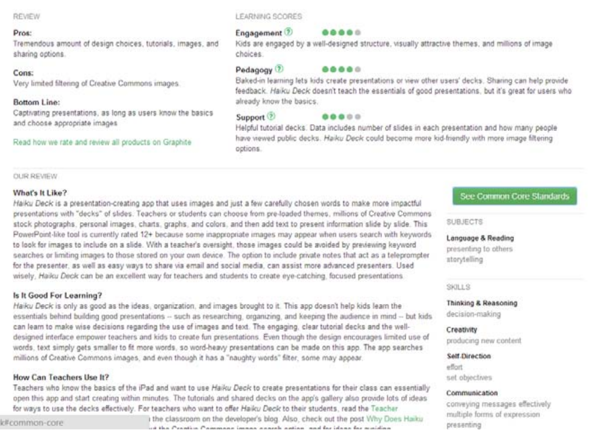

Graphite
Graphite é um repositório relativamente novo que armazena informações sobre recursos de aprendizagem e é mantido pela Common Sense Media. No Graphite é possível encontrar websites, jogos e apps que são oficialmente pontuadas por um comitê de editores e revisores. Como o portal é construído por professores e para professores, tal comunidade também é autorizada a pontuar e comentar sobre os recursos, incluindo impressões de uso em sala de aula. As notas médias dos professores são mostradas juntamente com as pontuações oficiais. As avaliações variam entre 1 e 5 e indicam o potencial de aprendizagem dos recursos (não serve para aprendizagem, suficiente, bom, muito bom, excelente) seguindo três dimensões de aprendizagem, sendo elas:
1. Engajamento: o quanto os recursos seguram o interesse dos estudantes; 2. Pedagogia: se o produto possui conteúdo central para a experiência de aprendizagem; 3. Apoio: se o recurso fornece retorno apropriado, e se existe apoio para professores e estudantes.
Cada revisão de recurso ainda contém comentários sobre os pros e contras desse recurso, e como o recurso funciona. 